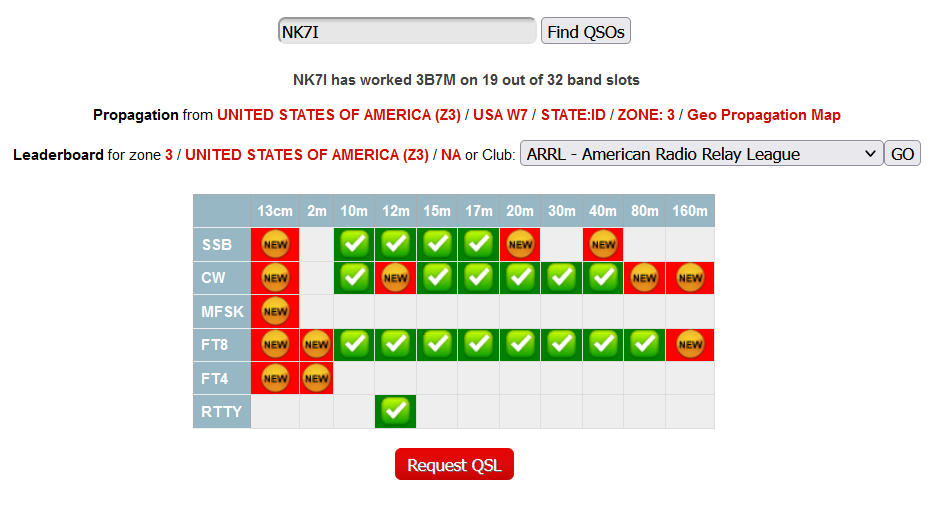

I went from starting with a needed ATNO to
almost all hoped for slots, in the log.

Comments:
The team effort was EXCELLENT and provided ample opportunities
globally, except on 20 CW for some reason (EU propagation
periods for 20 CW were heavily favored). Their statistics show
an overall 2:1+ favoritism EU:US but their total numbers were
impressive for a small team; proving that they 'hit the ground
running hard' and never let up. It was an OUTSTANDING effort
for a team of any size.
A solar storm shut down any hope, on any band, early in the
team operations up here in the north; NOTHING on HF was much
beyond NA. It was a complete blackout. It was frustrating to
see others responding to 3B7M calls, yet having zero propagating
for about 40 hours.
Once that cleared up, getting the contacts was a little more
effort with a gimpy station (the antenna also acts up on 40M),
but overall, I'm pleased with the results, though filling 12 CW
and 20 phone would have been welcome additions and all of the
hoped for band mode slots would be completed.
The team was slow at first to recognize some of the propagation
to the US, leaving opportunity gaps but the CW operator was
FIRST class; rapid for those who could be fast, slowed for those
sending slower and patient to make sure the call was accurately
heard. 3B7M was one of the best teams in the field in recent
memory; FIRST CLASS all the way and quite a bit of fun too while
it continued to snow here (the precise opposite of what the team
saw).
73,
Rick nk7i